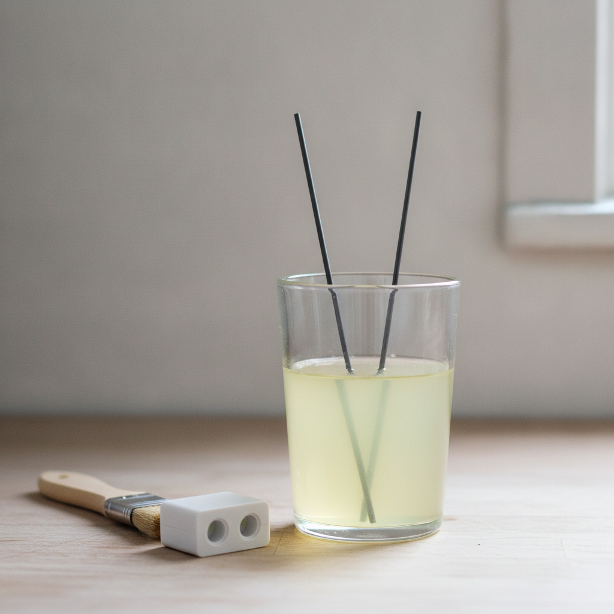

How it works
It measures how well the water carries current
SenseTwo graphite rods in the flow
Drive1 kHz square wave, both directions
CorrectWater temperature from an NTC
WaitFirst 20 seconds thrown away
DecideMedian of 512 samples
SendBluetooth to the phone
A reed impeller wakes the board when someone opens the tap. Nothing draws power between draws.

The electrodes are driven in alternating directions because direct current plates ions onto the graphite and the reading walks away within seconds. The first 20 seconds of a draw are discarded because water that has been standing in the pipe reads high.
